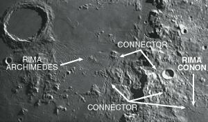

Other than a good view of a high moon, I don't know of any special events happening this month. From new 'til full, it should be an interesting lunation on every clear night.
But I am going to single out one time and place: the area of the Apennine Mountains between Rimae Conon and Archimedes. For those of you with Rukl, it's on map 22 - and right on the lunar meridian.
Why there? Because it illustrates something I find fascinating about the moon: weirdnesses you can find with your own telescope.
With any luck, this area should be just about ideally lit on Thursday, May 10, with some light shift during the evening. If the seeing is at all decent, you should get a view at least as good as the photo that accompanies this article.
|  |
A quick digression about the illustration: it was shot by the outstanding CCD artist and telescope maker Maurizio Di Sciullo in Florida through one of his 10-inch newtonians. This is only a small part of a much larger mosaic he sent me, which I edited and labelled.
It's meant to show something I noticed about 18 months ago, and have since studied and reconfirmed several times.
I noticed one night that Rima Conon has what seems to be a buried extension that climbs up the eastern face of the Apennines.
Fascinated, I kept tracing, and soon found two major channels that seem to go all the way through the mountain range and join up with the Bradley rille complex, as well as the Rima Archimedes.
First, it's possible that this is just an optical coincidence. Second, even if it's true, I have no idea who would find it interesting (or why) other than myself and perhaps some other lunar observers.
There is nothing unique about this situation - both rimae Sirsalis and Hesiodus cut through all manner of mountainous terrain, and run greater distances (though neither cuts through quite so spectacular a range, nor has twinned branches... but hey, details).
What is interesting, from my point of view, is I have been unable to find any reference to this phenomenon - making it a bit of a "secret" little project to consider and discuss.
This is not at all that rare on the moon: it's a big place that hasn't been looked at all that carefully.
If the photo reproduces well, you should be able to trace both branches from the end of the exquisite Conon squiggle up the slope, where it splits at a steeply shadowed scarp. From there, one branch runs almost due west, straight through the mountain range to very near the southern end of Rima Bradley, and even closer to what appears to be a terminus of Rima Archimedes.
The other branch of the mystery rille trace angles northeast for a short stretch (this is, in some ways, usually the easiest part of it to see) and back down the eastern slope to nearly join Rima Bradley again.
None of these three stretches looks exactly like a rille, but more like a rima concealed under a light covering.
What does it all mean? I don't know. In fact, I look forward to comments and discussion.
But it does mean this: if you look at the moon, and let your curiousity lead you where it will, all manner of interesting puzzles and ideas crop up.
They'll lead you to some understanding of geology, and how structures differ on other bodies in the solar system. Conjectures about how - and why - such formations happen.
And a sense of wonder.